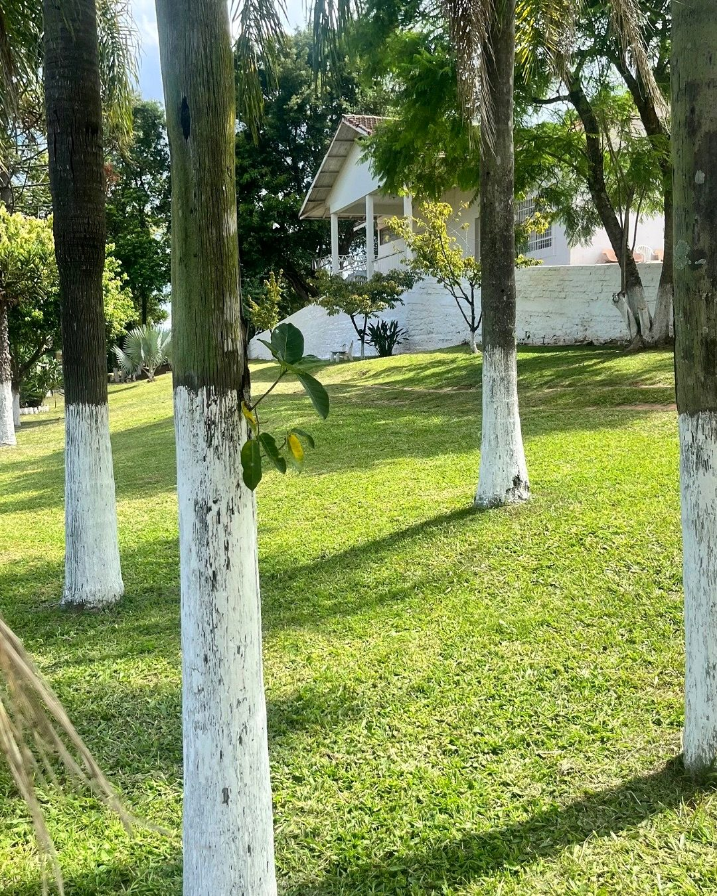

Da noite mais escura à primeira luz de um recomeço.
Acolhemos, tratamos e reintegramos homens que decidiram recomeçar. Aqui, a vida acontece, floresce e dá frutos.
Como podemos caminhar juntos
Três portas, um mesmo propósito. Escolha a que fala com o seu momento.
Preciso de ajuda
Vaga de acolhimento para você ou alguém da sua família. Entenda como funciona e fale com a equipe.
Ver o acolhimentoQuero doar
Pix direto, cotas de patrocínio e apadrinhamento mensal. Sua doação sustenta alimentação, cuidado e estrutura.
Formas de doarConhecer a instituição
Quem somos, nossa história, transparência e as frentes de trabalho que sustentam a casa.
Sobre o projetoUm lugar seguro para reconstruir a própria história
O Projeto Luz na Madrugada é uma comunidade terapêutica dedicada ao acolhimento, ao tratamento e à reinserção social de homens em situação de dependência química. Aqui, cada pessoa encontra estrutura, cuidado e propósito para recomeçar com dignidade.
A rotina une trabalho, convivência, fé e capacitação profissional. O sustento vem em parte da própria casa — horta, produção de tijolos, meio-fios, lenha e pisos de concreto — e a reinserção se prepara com cursos e certificação.

Encosta do Sol, Estância Velha
Pátio arborizado, áreas de convivência, horta e alojamento — o ambiente onde a rotina de recuperação acontece.
Vidas, tempo e trabalho
Dados que traduzem o alcance da casa. Os campos marcados aguardam confirmação da coordenação.
Quatro eixos sustentam a recuperação
Não é só afastar do vício. É reconstruir corpo, mente, vínculo e futuro — todos os dias.

Horta, tijolos, lenha e PAVS
O trabalho dá estrutura ao dia e sustento à casa: horta, produção de tijolos, meio-fios, lenha e pisos de concreto.

Rotina, cuidado e vínculo
Preparo das refeições, cuidado do pátio e dos animais, atividades em grupo e educação física reconstroem a convivência.
Devocionais, oração e culto
A dimensão espiritual sustenta a obra e está presente sem ser imposta: devocionais, momentos de oração e culto semanal.
Curso de solda e reciclagem
Curso de solda básica com certificação e reciclagem de resíduos em parceria com a Veiga Sul preparam o retorno ao mercado.
A madrugada é o momento mais escuro. Mas é também o que vem logo antes da primeira luz. Traduzimos essa passagem em cada vida: do fundo para o recomeço, da noite para o dia que nasce.
Você pode ser a luz na madrugada de alguém
Uma doação sustenta alimentação, cuidado e estrutura. Um apadrinhamento mensal dá previsibilidade para a casa planejar. Qualquer gesto ajuda a manter a porta aberta.